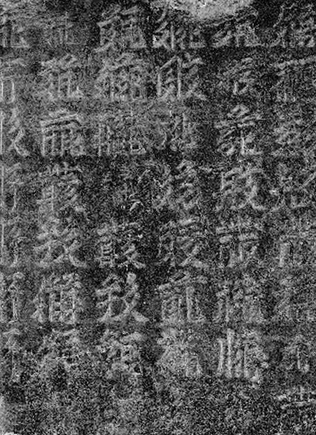
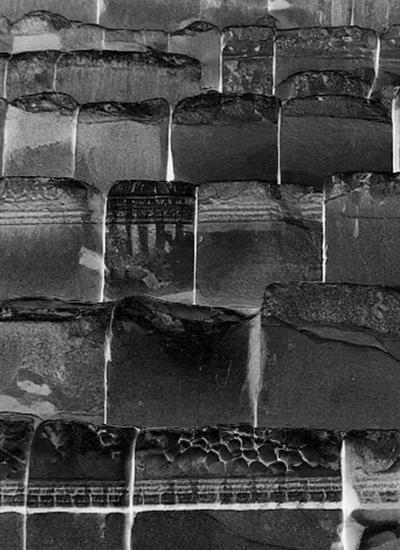
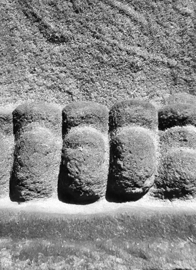
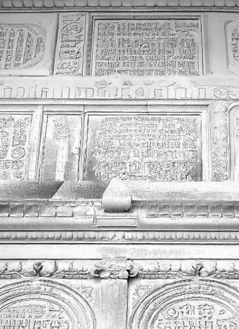
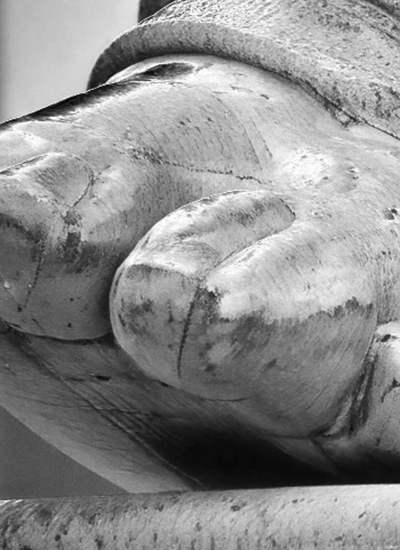
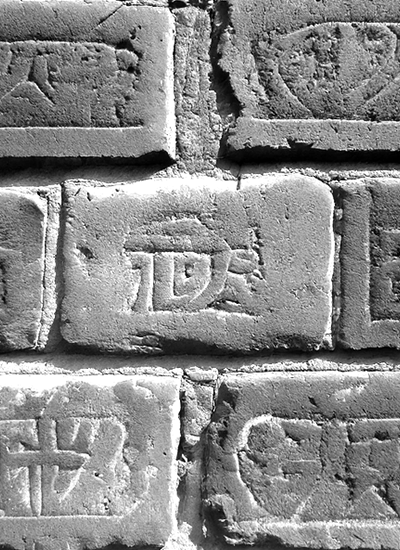
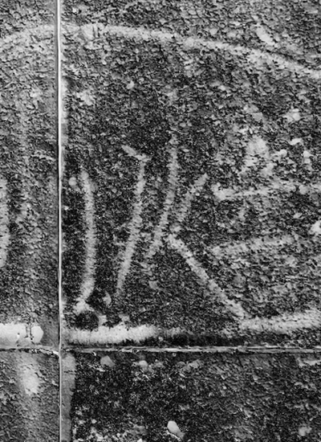
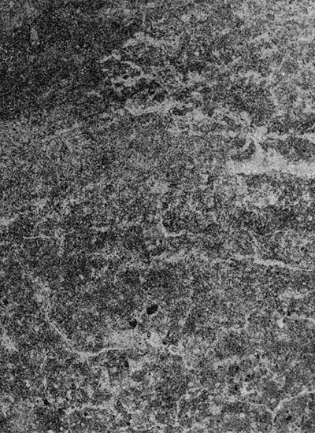
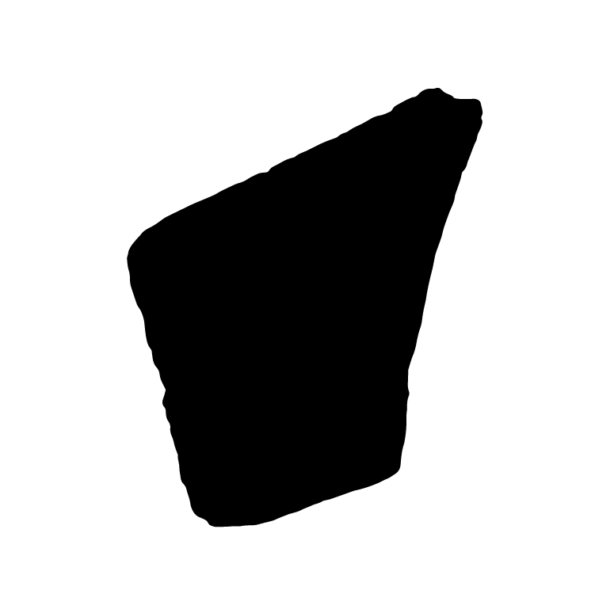

〈오픈소스스톤〉
은 공공기물에 새겨진 흔적을 디지털화하여 웹에서 영속적으로 보존하고 전달하는 작업이다. 공공기물은 식당 냅킨, 시험지의 뒷면, 전화기 옆 영수증처럼 일상에서 즉흥적인 표현의 장이 되곤 한다. 그리하여, 거리의 돌 위에 새겨진 그림이나 문자는 단순한 표식 이상의 의미를 지니게 된다. 돌에 새겨진 그림이나 메시지는 웹상에서 자유롭게 재구성되며, 그 의미는 계속해서 확장된다.